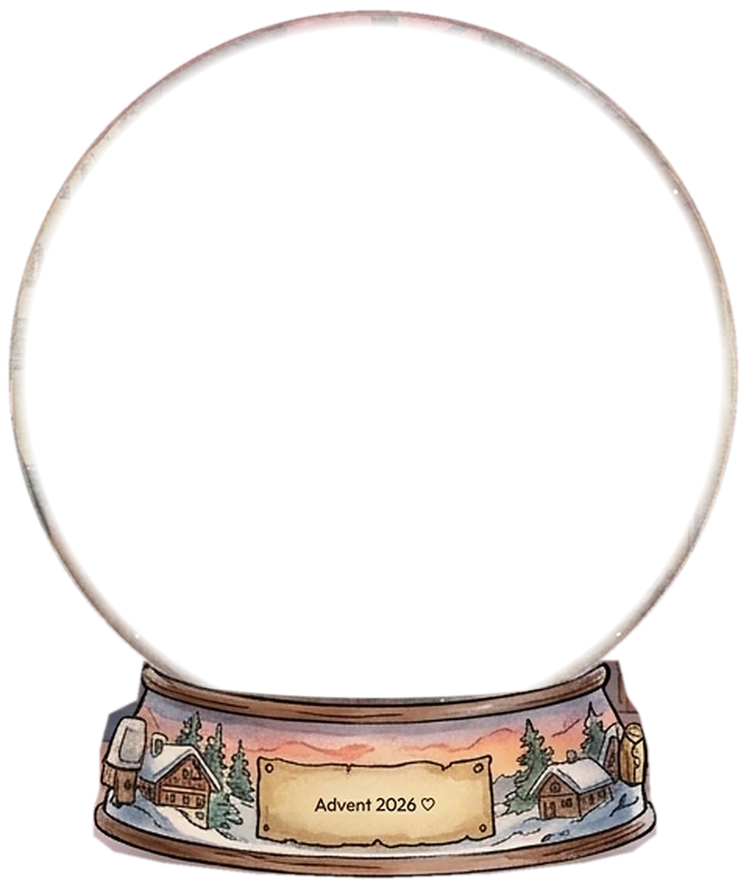
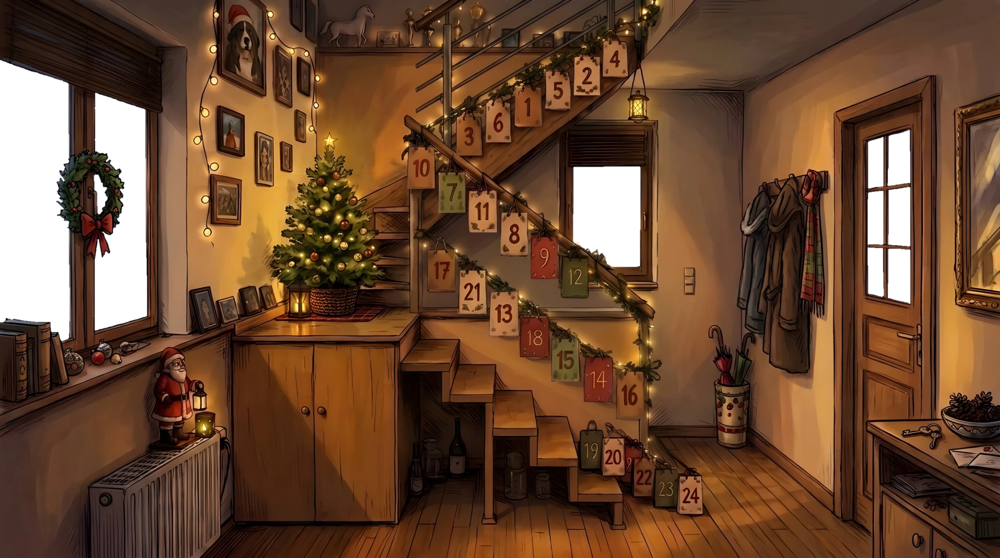
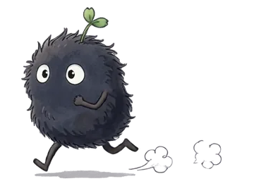

✨
Übergang
Wie geht es in die Kugel?
❄️ Schneegestöber
🌀 Wirbel
💫 Sternensprung
🌊 Welle
🔍 Schlicht
Bild ansehen
✕ zurück
← wischen →
für meine Lieblingsschwester
Dein Adventskalender



Huch!
z
z
Z
Pssst…
← zurück zur Schneekugel
Handy schütteln einschalten
Tipp auf die Kugel, um hineinzuschauen · auf den Sockel, um sie zu schütteln
✕